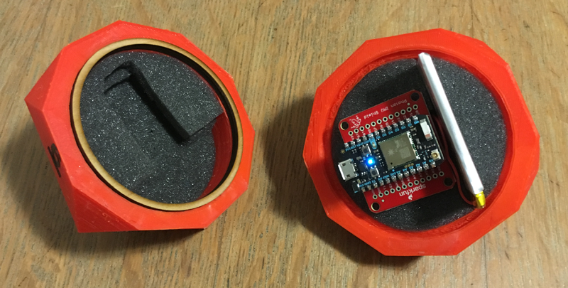
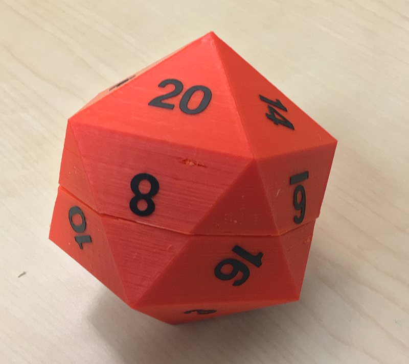
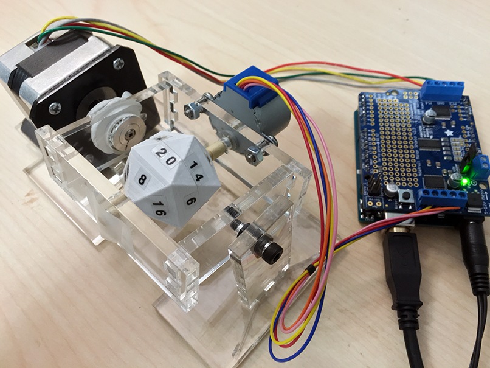

IoT Device Prototype
2015
Software
Arduino Code · Photon Code · Node.js · Adobe Premiere Pro
Hardware & Tools
Arduino · Photon · 3D printer · laser cutter
Skills Used
concept design · circuit building · prototyping · video editing
Have you ever wanted to play Dungeons & Dragons with friends remotely, but missed the tactile experience of rolling dice and the suspense of seeing what was rolled? In this two-person project, we addressed how to recreate these in-person interactions with a pair of dice: one die is rolled, while the partner die moves to match the resulting roll. This project was an exploration in how to replicate the excitement of playing tabletop games together in one room with the help of the Internet of Things.
This two-person project had no limits other than creating any kind of internet-connected device. Since both of us shared an interest in D&D, we began to explore that interaction environment. Software exists which allows remote players to play D&D, but all of the interactions are virtual. You can use random number generators in place of dice, but this takes away from the sense of excitement when physically rolling your own dice. While a person could still roll their own dice and report the results, this again takes away from the connected experience all players in a D&D campaign share.
We felt that the physicality of D&D was one of the main reasons why people enjoy the game. Because of this, we considered ways to bring that sense of tangibleness to a virtually run campaign. The action of rolling a die was easy enough to recreate, but it would be more difficult to mimic the other players' perspective of anticipating the die's result. Our initial idea was that one die would be rolled by the player, while another die would roll on its own to match it. We also were determined to make these paired dice D20, rather than any smaller number sided dice, as these are iconic to D&D.
The player's die required an IMU shield to retrieve the orientation of the die when rolled, and a Photon microcontroller was used to send the result of the roll to the cloud. Training data was collected to estimate the pitch, yaw, and roll for each side. A rechargeable battery also powered the entire device. For the die's design, we created a hollow D20 where all the circuit components could fit inside. We also surrounded the circuit with foam to protect the parts as the die rolled around. Decal stickers were then placed to label each side.
 As for the observed die, we struggled with how to create a self-rolling die where all the components could be contained within the die itself. Due to time and cost constraints, we settled on creating an externally-rolled die. Even then however, we still needed to determine how to get the device to correctly display all 20 sides of the die. Eventually we figured out that this required two axes of rotation, so we needed only two motors for spinning our die. One motor spun the die at its center axis, while the other motor would rotate the entire die around an outside axis.
We attempted to build a structure around the self-rolling die that was as invisible as possible with the use of clear acrylic. However, with all the required components to get the die to rotate, our end result was not as transparent as we hoped. However, it did function as intended: the circuit controlling the die would receive the roll results from the cloud, and the two motors would then work together to spin the 3D printed die to the matching side.
When the two dice were finally paired together for testing, the result seemed almost magical, even though I knew what actually controlled the two devices. It was that kind of reaction that we were aiming for though: a desire for the player to pick up the die and roll it, and an equal desire for the other D&D players to watch the other die spin, curious to know what the outcome would be. It would be hard to reproduce this same kind of experience with simply a random number generator.
This project proved to be technically challenging. For the rolled die, I found calibrating each side to be difficult, as the values provided by the magnetometer shifted depending on my testing location. This meant that the data collected when testing the die at home was slightly different than when testing the device on RIT's campus. Two different sets of training data were ultimately used. However, I was quite pleased with the visual appeal of the die and how we managed to neatly fit all the circuit components within the container.
With the self-rolling die, I was satisfied with the technical aspects of it, as the motors worked as intended. If we had more time, I would have liked to redesign the device's surrounding structure so that the motors and Arduino would appear more out-of-sight, in order to really add to the sense of magic.